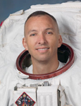

Lyndon B. Johnson Space Center
Houston, Texas 77058
|
National Aeronautics
and Space Administration Lyndon B. Johnson Space Center Houston, Texas 77058 |
 |
Biographical Data |
||
RANDOLPH J. “Komrade” BRESNIK (COLONEL, U.S.
Marine Corps)
NASA Astronaut
Pronunciation: RAN-dolf BRES-nick
PERSONAL DATA: Born September 11, 1967 in Fort Knox, Kentucky. Considers Santa Monica, California to be his hometown. Married to the former Rebecca Burgin of Pompton Plains, New Jersey, they have a son and a daughter. He enjoys travel, music, photography, weight training, sports, scuba diving, motorcycling, and flying warbirds. His father Albert ‘Randy’ Bresnik resides in Santa Monica, California.
EDUCATION: Graduated from Santa Monica High School, Santa Monica, California, 1985. Bachelor of Arts in Mathematics from The Citadel, Charleston, South Carolina, 1989. Master of Science in Aviation Systems, University of Tennessee-Knoxville, 2002. Graduate of Air War College, 2008.
ORGANIZATIONS: Associate Fellow, Society of Experimental Test Pilots; Association of Space Explorers; Association of Naval Aviation.
MILITARY AWARDS: Legion of Merit; Defense Meritorious Service Medal; Meritorious Service Medal; three Strike/Flight Air Medals; three Navy and Marine Corps Commendation Medals with Combat “V”; three Navy and Marine Corps Achievement Medals; Presidential Unit Citation and various other service awards.
SPECIAL HONORS: Distinguished Graduate: The Citadel Naval Reserve Officers Training Corps (NROTC), Officer Candidate School, The Basic School, Navy Flight Training; “Iron Mike” Physical Fitness Award, U.S. Marine Corps Officer Basic School; The Outstanding Student Award, U.S. Naval Test Pilot School; Empire Test Pilot School Award, United States Naval Test Pilot School; Stephen A. Hazelrigg Memorial Award for Best Test Pilot/Engineer Team, Naval Strike Aircraft Test Squadron; “Best Presentation” Award, European Society of Experimental Test Pilots Symposium; Honorary Doctor of Aeronautics from The Citadel, 2010.
EXPERIENCE: Bresnik received his commission as a Second Lieutenant in the U.S. Marine Corps from the Naval Reserve Officer Training Corps at The Citadel in May 1989. After graduation, he attended The Basic School (TBS) and Infantry Officers Course (IOC) in Quantico, Virginia. He attended primary flight training in Pensacola, Florida, Intermediate and Advanced flight training in Beeville, Texas, and was designated a Naval Aviator in 1992. He completed initial F/A-18 training at Navy Fighter/Attack Training Squadron VFA-106, NAS Cecil Field, Florida. Upon completion of training, he reported to Marine Fighter/Attack Squadron, VMFA-212 at Marine Corps Air Station (MCAS) Kaneohe Bay, Hawaii, then MCAS El Toro, California, and additionally MCAS Miramar, California, where he made three overseas deployments to the Western Pacific. While assigned to VMFA-212, he attended the Marine Corps Weapons and Tactics Instructors Course (WTI) and Naval Fighter Weapons School (TOPGUN). Bresnik was selected for U.S. Naval Test Pilot School (USNTPS) at NAS Patuxent River, Maryland and began the course in January 1999. After graduation in December 1999, he was assigned as a F/A-18 Test Pilot/Project Officer at the Naval Strike Aircraft Test Squadron (NSATS). While at Strike, Bresnik flew the F/A-18 A-D and F/A-18 E/F in all manners of flight test. In January 2001, he returned to the USNTPS as a Fixed-Wing and Systems Flight Instructor where he instructed in the F/A-18, T-38, and T-2. Bresnik returned to NSATS in January 2002 to continue flight test on the F/A-18 A-F as the Platform/Project Coordinator. In November 2002, he reported to Marine Aircraft Group Eleven (MAG-11) as the Future Operations Officer. In January 2003, MAG-11 deployed to Ahmed Al Jaber Air Base, Kuwait. From Al Jaber, he flew combat missions in the F/A-18 with VMFA-225 in support of Operation Southern Watch and Operation Iraqi Freedom. He was the Operations Officer of VMFA-232 when he was selected as an astronaut.
He has logged more than 5,800 hours in 81 types of aircraft. He holds an Airline Transport Pilot Rating and an Unlimited Piston Engine Letter of Authorization.
NASA EXPERIENCE: Selected as an astronaut by NASA in May 2004. In February 2006, he completed Astronaut Candidate Training that included scientific and technical briefings, intensive instruction in shuttle and International Space Station systems, physiological training, T-38 flight training, and water and wilderness survival training. Bresnik completed his first spaceflight on STS-129 in November 2009. In 2010, Bresnik trained as a cave-a-naut in the extreme environment training of the European Space Agency’s Cooperative Adventure for Valuing and Exercising human behavior and performance Skills (CAVES), in Sardina, Italy. This was the first spaceflight analog of its type living deep beneath the surface of the Earth.
In September 2014, Bresnik, his three crew members and two habitat technicians tested technologies and training techniques for use aboard the International Space Station and future deep space exploration missions during NASA’s Extreme Environment Mission Operation (NEEMO 19). Bresnik was the Commander of NEEMO 19 team of aquanauts. The mission was conducted in Florida International University’s undersea research habitat the Aquarius Reef Base, located six miles off the coast of Key Largo, Florida, and 62 feet below the surface of the Atlantic Ocean.
SPACEFLIGHT EXPERIENCE: STS-129 (November 16 through November 29, 2009) was the 31st shuttle flight to the International Space Station. During the mission, the crew delivered two Express Logistics Carriers (ELC racks) to the space station, approximately 30,000 pounds of replacement parts for systems that provide power to the station to keep it from overheating, and maintain proper orientation in space. Bresnik performed two spacewalks for a total of 11 hours and 50 minutes. The STS-129 mission was completed in 10 days, 19 hours, 16 minutes and 13 seconds, traveling 4.5 million miles in 171 orbits, and returned to Earth bringing back with them NASA astronaut Nicole Stott following her tour of duty aboard the station.
SEPTEMBER 2014